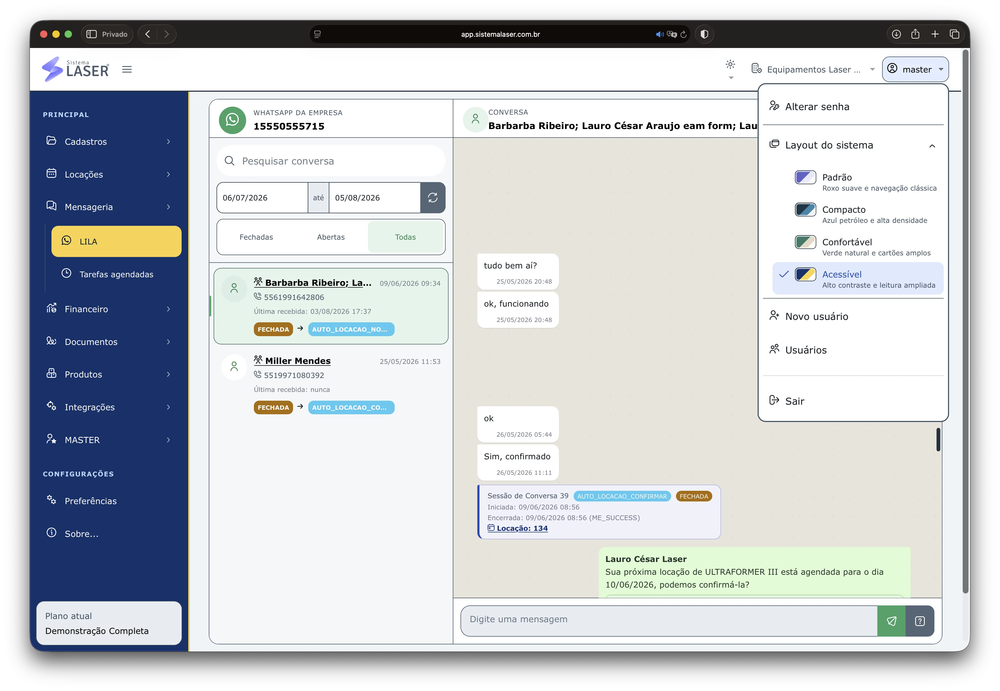
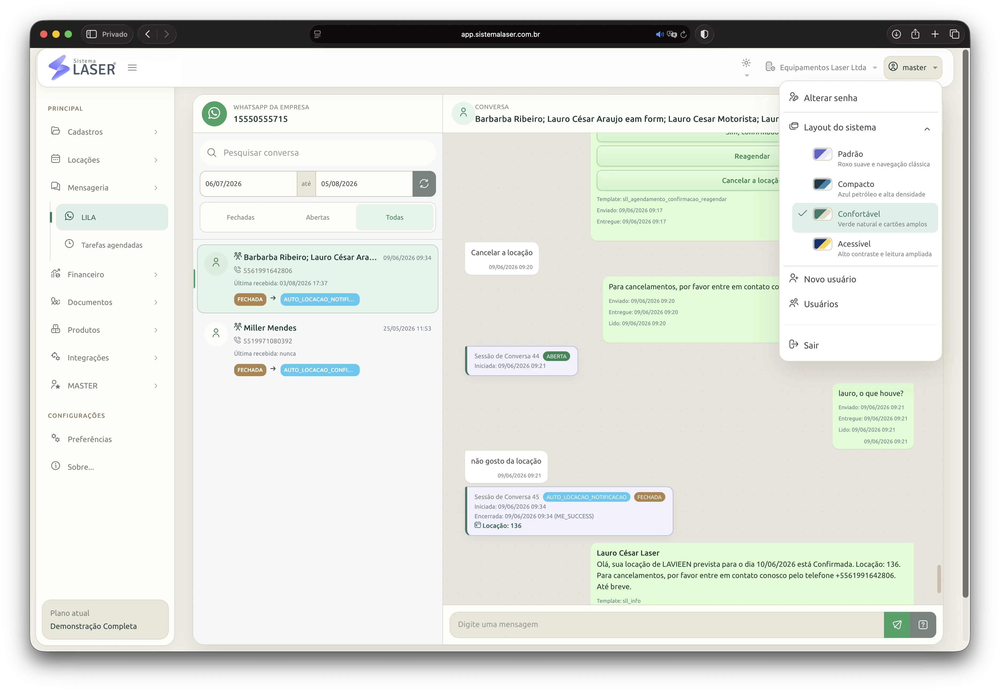
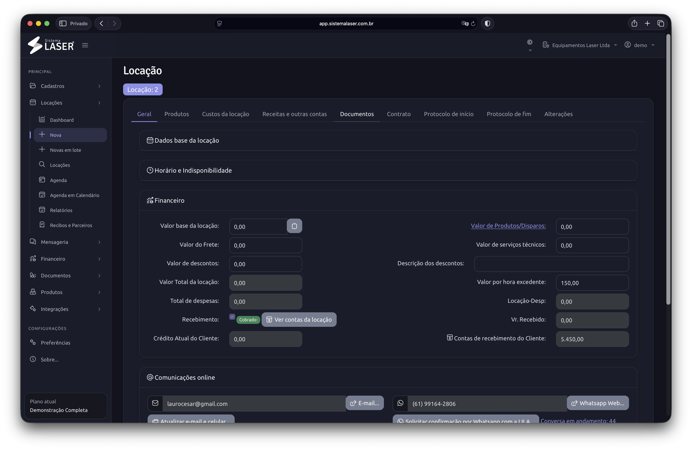

Layout acessível
Uma opção visual com maior contraste para favorecer a leitura e a identificação dos elementos da operação.
Conheça a profundidade do Sistema Laser sem precisar montar uma colcha de retalhos de ferramentas.
Gerencie locações com diferentes visões de agenda, consultas rápidas e filtros por equipamento, modelo, cliente ou responsável.

Consulte a operação no computador, celular ou tablet e leve os dados para análises complementares quando precisar.

Gerencie leads, negócios e a jornada dos clientes atuais com dashboard, tarefas, automações, formulários configuráveis, agenda e relatórios.

Controle custos e receitas sem transportar informações entre planilhas. Valores de locações, cobranças, manutenção, estoque, comissões, parceiros e filiais permanecem relacionados à sua origem.

Envie contratos, protocolos com fotos e outros documentos para assinatura eletrônica ou apenas como notificação. Use o recurso de forma independente ou integrado às locações.

A LILA conduz fluxos automáticos pelo WhatsApp e registra o resultado de cada conversa, deixando as pessoas livres para captar novos clientes e expandir a base.

Reúna cadastro, disponibilidade, histórico, reparos, custos, produtos e consumíveis para decidir com contexto antes de liberar uma nova locação.

Crie protocolos personalizados para orientar a equipe, documentar as condições de entrega e devolução e manter cada registro vinculado à locação correta.
Fotos, respostas e assinaturas ajudam a padronizar a conferência antes e depois do uso. Assim, a empresa preserva um histórico consultável e oferece mais clareza para clientes e responsáveis pela operação.

Configure diferentes tabelas de preços para cada equipamento e mantenha um valor padrão para a rotina comercial.
Quando um cliente tiver uma condição negociada, registre preços específicos para ele. Nas próximas locações, a equipe encontra o valor correto no próprio sistema, reduzindo consultas paralelas, divergências e retrabalho.

Estruture diferentes unidades, proprietários e perfis dentro da mesma base.

Reduza lançamentos repetidos e mantenha o Sistema Laser ligado às ferramentas que participam da operação e do atendimento.

Alterne entre layouts e temas para encontrar a combinação mais confortável para o ambiente, o dispositivo e a rotina de cada usuário.

Uma opção visual com maior contraste para favorecer a leitura e a identificação dos elementos da operação.

Uma organização visual equilibrada para quem passa boa parte do dia consultando agendas, cadastros e controles.

Reduza o brilho em ambientes com pouca luz ou acompanhe automaticamente a preferência do dispositivo.
Estamos preparando a emissão de notas fiscais eletrônicas dentro da plataforma, conectando o faturamento ao contexto da operação e reduzindo retrabalho.
A funcionalidade ainda não está disponível. Conheça a proposta e acompanhe essa nova etapa da evolução do Sistema Laser.
Conhecer a novidade
Esta página reúne o catálogo completo. As páginas específicas mostram como cada conjunto de recursos atende uma necessidade ou tipo de locadora.
A página de planos mostra limites e disponibilidade de cada recurso sem esconder detalhes.